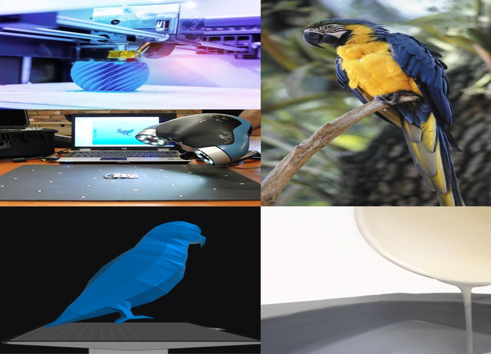

Development of articulated parrot from start to finish
This page will cover the artefact's design, development and final production.
Design
This project aimed to develop a 3D articulated model of a parrot.
This model consists of 5 separate pieces that would be constructed together to create the final piece.
The 5 pieces are the Head, the chest plate, the lower body, the concentric cam, and perch. The intended idea was to create each of these in either Blender or Fusion360.
Available technologies
There were 7 types of technology available to create this project.
Motion capture
Motion capture is a technique used to record the movement of people and objects. This involves tracking the actor or object's movement and then using this data to generate this movement in a computer-generated environment.
For this technology to work actors must wear special suits and be covered with markers. These markers will reflect the light emitted by cameras placed around the capture area.
A few common uses for motion capture are Video games, Virtual reality, and TV & film.
This technology was unsuitable for designing the parrot model as it was not possible to bring in a live parrot to capture its movement.
CAD and 3D modelling
For this project two options were available, Blender and Fusion360.
Both these softwares allow the user to create digital representations of objects or surfaces.
However, Fusion360 is primarily used for tasks that are more geared towards engineering e.g. creating gears, while Blender is more focused on animation and rendering scenes.
For this project, both of these softwares were used for 3D modelling of the parrot.Fusion360 was used to model the concentric cam, and Blender was used to model the other parts of the body.
This choice was made as Fusion is good for engineering projects and the cam consists of moving objects so it was perfect for this task. While Blender is better for the creation of the other parts as it is animation-geared, so it was good for the aesthetic side.